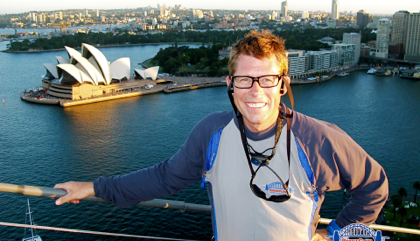

Sydney

Sydney set fra oven
lørdag den 29. december 2007

Vi vågner op til lyden af skibe der tuder. Da vi trækker gardinerne til side, kan vi se, at vejret er perfekt: høj himmel uden en ærlig sky og behagelige 25 grader. Vi tager en bus rundt i Sydney, for at danne os et overblik over byen. Det er en perfekt dag til at tage ud på en af strandene Bondi, Bronté eller Manley, men det venter vi med til i morgen, for i eftermiddag er vi inviteret til cocktailparty hos hoteldirektøren på Park Hyatt, og bagefter skal jeg have min julegave fra Camilla: jeg skal bestige Harbour Bridge i skumringen, det vil sige kl. 18.
Som Camilla skrev i går, er vores hotel her i Sydney ret fantastisk, og specielt beliggenheden er super, især her op til nytårsaften, for alt fyrværkeriet foregår lige over hovedet på os og rundt omkring i havnen. Camilla og jeg skal til fest oppe på hotellets rooftop, samme sted, som der er cocktail arrangement i dag, så vi skal da lige op og se, hvordan det mon kommer til at fungere. Hotellets direktør forklarer, hvordan vi kan stå ude på en lille græsplæne oven på taget og derved har vi hele Harbour Bridge i første parket. Efter en halv times tid, siger jeg farvel til hele familien for netop at bestige før omtalte bro. Hele turen tager 3.5 time, hvor den første time går med sikkerhedstjek. Vi testes for alkohol (godt at der er gået et par dage), vi skal skrive under på alverdens ting, vi skal igennem en metaldetektor, da vi intet må have med på broen, ogs å udstyres vi med specielle dragter og diverse udstyr som radiomodtager, klatreseler, og stropper til briller, kasketter o.l.
Tidspunktet har Camilla valgt med omhu, og det er jeg rigtig glad for. på vejen op, har vi solen og det smukkeste lys over byen og havnen. da vi når toppen og skal krydse over vejbanen 85 meter over bilerne, stopper vores guide os på midten, for nu skal vi lige nyde en perfekt solnedgang. vel ovre på den anden side, er det tid til at gå tilbage mod byen og højhusene som nu er oplyst. Himlen bliver lyserød, lilla og mørkeblå inden vi er nede igen efter 2.5 times klatring og ca. 1100 trappetrin. En fed fed oplevelse, som man ikke bør snyde sig selv for, specielt når vejret er så dejligt.
På vej hjem til hotellet, fornemmer jeg tydeligt at det er lørdag aften og sommer i Sydney. Byen summer af liv og musik strømmer ud fra byens mange restauranter og barer. Sydney er virkelig en livlig og dejlig by. godt at vi skal være her nogle dage endnu.
Udsigten fra toppen af Harbour Bridge er storslået. Vi kan se havet og strandene til den ene side, samt startlinien til Sydney Hobart, der blev sejlet i den forgange uge. Til den anden side kan vi se helt til Blue Mountains. Og så selvfølgelig opera huset i solnedgangen.